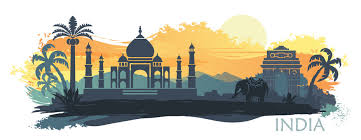
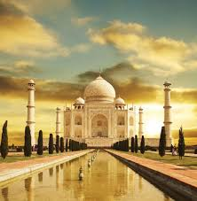
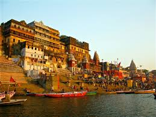
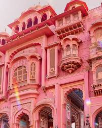
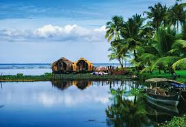
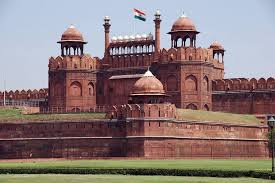

Discover India – Tourism & Culture Portal |
About | | Places | | Location | | Slots | | Contact |

Discover India is your curated portal into one of the world’s oldest living civilizations. This platform celebrates the breathtaking diversity of the Indian subcontinent, bridging the gap between its historic past and dynamic present.Here, you will explore the architectural marvels of the Golden Triangle, the sacred rhythms of spiritual hubs like Varanasi, and the pristine wilderness of the Northeast. We bring you closer to India's cultural core through deep dives into classical dance, regional culinary arts, and spectacular festivals like Diwali and Holi. Whether you are planning your first journey or seeking a deeper connection to Indian heritage, find your inspiration here.
|
 |
The Taj Mahal, Agra-The Taj Mahal stands as the ultimate architectural triumph of the Mughal Empire and an enduring global symbol of eternal love. Commissioned in 1632 by Emperor Shah Jahan to house the tomb of his favourite wife, Mumtaz Mahal, this UNESCO World Heritage site took over twenty years and twenty thousand artisans to complete. Built entirely from pristine white Makrana marble, the monument is celebrated worldwide for its perfect bilateral symmetry, exquisite Pietra Dura inlay work using semi-precious stones, and massive central dome flanked by four elegant minarets. The structure possesses a magical, ethereal quality, visibly changing its hue from a soft pinkish-gold at dawn to a dazzling brilliant white at noon, and a serene milky-blue under a full moon. Set within a pristine charbagh, or formal Islamic Mughal garden divided by reflecting pools, the entire complex is designed to mirror paradise on earth. It continues to draw millions of international travelers each year who come to marvel at how human hands transformed heavy stone into a structure that appears as light as a cloud. |
|
 |
The Holy City of Varanasi-Varanasi, rising from the western banks of the sacred Ganges River in Uttar Pradesh, is one of the oldest continuously inhabited cities on Earth and the beating heart of Hindu spirituality. Known anciently as Kashi, this mystifying city is considered by Hindus to be the earthly home of Lord Shiva and a place of cosmic transition where dying breaks the cycle of rebirth to grant instant moksha, or liberation. The city's daily life unfolds spectacularly along its eighty-four historic stone ghats—massive stairways leading down to the river—where pilgrims perform ritual sunrise cleansings, sages meditate, and the smoke of perpetual cremation fires rises from the sacred burning grounds of Manikarnika Ghat. As twilight falls, the atmosphere transforms completely during the Ganga Aarti ceremony at Dashashwamedh Ghat, a choreographed spectacle where young priests wave massive, tiered brass lamps to rhythmic chants and the sound of conch shells. Navigating the labyrinth of dark, claustrophobic alleyways just behind the riverfront reveals a vibrant, hidden world of ancient shrines, cows roaming freely, silk weaving workshops, and shops selling traditional street food, offering a raw, unfiltered encounter with India's deep spiritual core. |
|
 |
The Pink City of Jaipur-Jaipur, the capital of Rajasthan, serves as a majestic gateway to India's royal past, enchanting visitors with its opulent palaces, imposing hilltop forts, and highly planned grid architecture. Founded in 1727 by Maharaja Sawai Jai Singh II, the city earned its iconic nickname, the "Pink City," in 1876 when the entire historic core was painted a warm terracotta-pink to welcome Britain's Prince of Wales, a traditional color scheme strictly maintained by local law to this day. The city's skyline is dominated by the Amer Fort, a sprawling palace complex of yellow sandstone and white marble that blends Rajput and Mughal architecture, featuring the breathtaking Sheesh Mahal where walls are completely covered in intricate mirror mosaics. In the heart of the old city stands the City Palace, still home to the former royal family, alongside the Hawa Mahal, or Palace of Winds, a five-story pink sandstone honeycomb structure designed with 953 tiny windows allowing royal women to observe street life unseen. Jaipur seamlessly balances this rich heritage with a buzzing modern economy, where chaotic traditional bazaars filled with block-printed textiles, handmade pottery, and precious gemstones thrive alongside trendy heritage cafes and luxury boutique hotels. |
|
 |
The Backwaters of Kerala-The backwaters of Kerala represent a tranquil, tropical paradise that stands in complete contrast to the high-energy chaos found in India's northern cities. Stretching over nine hundred kilometers parallel to the Arabian Sea coast, this unique ecosystem consists of a vast, interlocking labyrinth of emerald-green canals, expansive lakes, and quiet rivers fringed by thousands of leaning coconut palms and lush paddy fields. The ultimate way to experience this serene landscape is by boarding a Kettuvallam, a traditional cargo boat converted into a luxurious, thatched-roof floating house, constructed entirely from eco-friendly bamboo poles, coir ropes, and cashew-nut resin without a single nail. As these houseboats drift leisurely past sleepy waterfront villages, travelers witness a timeless way of local life where residents wash clothes at the water's edge, fishermen cast Chinese nets from wooden canoes, and flocks of ducks swim through the waterways. The air here is clean and filled with the scent of wet earth, offering a rejuvenating escape where the slow, hypnotic rhythm of the water matches the region's famous Ayurvedic wellness philosophies, making it a mandatory stop for nature lovers and couples. |
|
 |
The Historic Capital of Delhi-Delhi, India's sprawling national capital, is a mesmerizing mega-city of intense contrasts where centuries of layered history smash directly into twenty-first-century modernity. The city is structurally and culturally divided into two distinct worlds: Old Delhi, the chaotic, walled Mughal capital of Shahjahanabad, and New Delhi, the orderly, monumental capital designed by British architects during the colonial era. In Old Delhi, the senses are overwhelmed by the towering red sandstone walls of the Red Fort, the massive courtyard of the Jama Masjid, and the hyper-congested alleys of Chandni Chowk bazaar, where rickshaws navigate tight lanes filled with the aroma of street food and spices. Conversely, New Delhi features wide, tree-lined boulevards, manicured green parks, and grand imperial landmarks like India Gate, the Rashtrapati Bhavan presidential palace, and the ancient, soaring stone minaret of the Qutub Minar. This duality makes Delhi a living museum where ancient Sufi shrines, colonial bungalows, high-tech corporate hubs, and trendy shopping malls exist side by side, perfectly encapsulating the chaotic, dynamic energy of modern India. |
| S.No | Place | Price | Slot | |
|---|---|---|---|---|
| 1 | Taj Mahal | |||
| 2 | Kerala | 15,000 | ||
| 3 | Varanasi | 25,000 | ||
Address : D.No 16-5, this street, Delhi, India
To Mail : Click Here
To Call : Click Here
< © 2026 All copy rights are reserved >